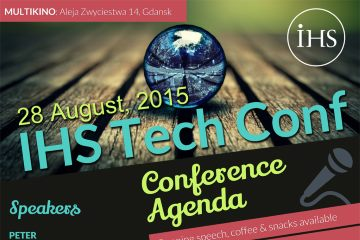

Wydarzenia
Bald and Beautiful
24 kwietnia 2019 r. odbył się finał akcji na rzecz fundacji St. Baldricks — dwunastka dzielnych wolontariuszy zgodziła się ogolić swoje głowy, by wspierać dzieci chore na nowotwór. Wspólnymi siłami udało nam się zebrać kwotę 1491$ co przerosło nasze najśmielsze oczekiwania. Wszystkim serdecznie dziękujemy udział i wsparcie.
Gdańsk Maraton 2019

24 kwietnia 2019 r. reprezentanci naszej firmy wzięli udział w piątej Gdańsk Maraton. Na zdjęciu Marcin Pultyn, Sylwia Ławrów, Michał Postupalski i Krzysztof Cichowski. Gratulujemy!
BeHealty Hackathon 2

W dniach 13-14 kwietnia 2019 r. pod patronatem IHS Markit oraz Polsko-Japońskiej Akademii Technik Komputerowych odbyła się w naszym biurze druga edycja BeHealthy Hackaton. Była to dla nas bardzo inspirująca przygoda i ogromne wyzwanie. W tym roku prawie 100 uczestników przekroczyło próg naszego biura. Wszystkim serdecznie dziękujemy za udział, wytrwałość i świetną zabawę!
Wietrzenie szafy

W dniach 1-8 marca 2019 r. przeprowadziliśmy zbiórkę odzieży na rzecz Fundacji Droga. Udało nam się zebrać kilka pełnych siat ubrań, które trafią do osób potrzebujących.
Dzień dziecka

Ostatnio odwiedzili nas bardzo wyjątkowi goście, którzy wprowadzili do naszego biura jeszcze więcej uśmiechu i radości. Zarówno Ci mniejsi, jak i więksi uczestnicy firmowych Mikołajek mieli okazję zwiedzić biuro i na własne oczy zobaczyć gdzie pracują ich rodzice, sprawdzić jak działa Łazik Marsjański, wykonać ozdoby choinkowe, zbudować choinkę ledową i oczywiście spotkać się z samym Świętym Mikołajem!
Loteria fantowa

Najlepszym sposobem na urozmaicenie sobie tygodnia ciężkiej pracy jest zrobienie czegoś dobrego! Zorganizowana przez nas loteria fantowa była świetną okazją do tego, żeby na chwilę oderwać się od codziennych obowiązków i zrobić sobie małą niespodziankę kupując los. W dość krótkim czasie nasza skarbonka wypełniła się po brzegi, a cały zebrany przez nas dochód został przekazany na leczenie Łukasza. Takie akcje utwierdzają nas tylko w przekonani u, że warto pomagać!
Nowe biuro
Po 20 latach rozstaliśmy się z naszym starym biurem przy ulicy Jaśkowa Dolina i przenieśliśmy się do nowoczesnego budynku C200 przy ulicy Marynarki Polskiej 163. Oficjalne otwarcie biura zaszczycił swoją obecnością nasz CEO — Lance Uggla.
Kolorowy piórnik

Koniec wakacji zbliża się wielkimi krokami, a wraz z nim początek roku szkolnego. Dla nas to świetna okazja do tego, żeby wspólnie zrobić coś dobrego.
InfoShare 2017
W dniach 16–18 maja 2017 r. w AmberExpo odbyła się konferencja InfoShare 2017, której jednym ze sponsorów była firma IHS Markit.
Targi Pracy PG 2017
W dniu 9 marca 2017 roku na terenie Politechniki Gdańskiej odbyły się Inżynierskie Targi Pracy, w których mieliśmy przyjemność uczestniczyć, zaprezentować naszą firmę oraz spotkać się ze studentami.
Dev# 2016

7 października 2016 r. w Multikinie w Gdańsku odbyła się konferencja Dev# organizowana przez IHS Markit, po raz pierwszy otwarta dla gości spoza firmy. Wykłady dali Mark Seemann, Karl-Henrik Nilsson, Chris Klug, Michał Taszycki i Tomasz Heimowski.
TestWarez 2016
W dniach 28-30 września 2016 roku w Karpaczu odbyła się 11. edycja TestWarez, największej konferencji dotyczącej testowania oprogramowania w Polsce organizowanej przez Stowarzyszenie Jakości Systemów Informatycznych.
Lambda Days 2016

W dniach 18–19 lutego 2016 roku w Krakowie odbyła się kolejna edycja Lambda Days - konferencji poświęconej szeroko pojętym zagadnieniom związanym z funkcyjnymi językami programowania. Pięcioosobowa delegacja IHS Global dzielnie udała się transportem kolejowym, aby uczestniczyć w konferencji.
Property Based Testing with F#

W ramach regularnych spotkań pod nazwą "Akademia Messera", 7 października 2015 pracownicy IHS Global mieli okazję posłuchać o alternatywnym podejściu do popularnych Unit Testów. Tomasz Heimowski opowiedział o Property Based Testing z wykorzystaniem języka F#.
HackSwift czyli koduj dla Vadera
5 października 2015 roku odbył się już trzeci hackaton z technologiami mobilnymi. Po dwóch, ciężkich przeprawach z Xamarinem, tym razem na warsztat wzięliśmy niedawny wytwór ekipy z Cupertino czyli język Swift. Oprócz zespołu Connect4mobile, który organizował to wydarzenie, udział wzięli goście z temu Phoenix, Connect a także jedna osoba z działu SQA.
Recenzja DevDay 2015
W dniach 17–18 września 2015 roku po raz kolejny odbyła się konferencja DevDay. Jak co roku wiele osób z naszej firmy zostało wysłanych w delegację w poszukiwaniu nowej wiedzy, technologii i zajawek. Część osób wyruszyła do Krakowa już w poranek w przeddzień konferencji, żeby móc przy okazji wziąć udział w spotkaniu krakowskiej grupy .NET oraz spotkać się z kolegami z branży poznanymi na poprzednich konferencjach.
IHS Tech Conf
28 sierpnia 2015 roku po raz kolejny zorganizowaliśmy wewnętrzną konferencję dla pracowników firmy IHS.
Wydarzenie miało miejsce w jednej z sal Multikina w Gdańsku i wzięło w nim udział ok. 140 pracowników, w tym założyciel naszego biura — Andrzej Dostatni, oraz przełożony Andrzeja — Randy Harvey.
Była to pierwsza edycja naszej konferencji, która odbyła się w sali kinowej i, jak się okazało, był to strzał w dziesiątkę, gdyż wiele osób zwracało uwagę na znakomitą widoczność ogromnego ekranu, a także większe skupienie uzyskane dzięki nastrojowej atmosferze sali kinowej.


 >
> >
> >
>